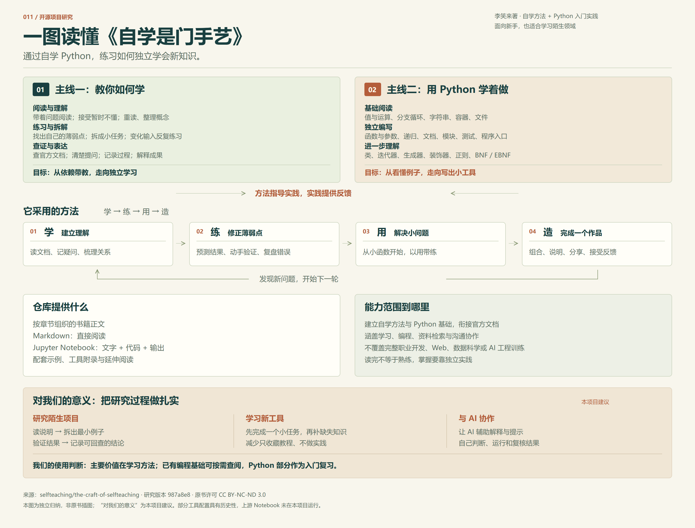

掌握学习的方法
理解陌生知识 → 找到薄弱点 → 拆成小问题 → 完成并复盘
- 带着问题阅读与重读
- 针对错误做刻意练习
- 拆解任务、保持注意力
以 Python 为练习场，学会独立阅读、拆解问题，
再把知道的东西，做成真正能用的成果。
这是一本以编程为案例的自学书。它既讲学习方法，也提供可运行的 Notebook 和 Python 基础；它能为继续学习搭桥，读完之后仍需要练习、作品与反馈。原书的定位 ↗
用编程的可观察反馈，把阅读、练习和独立完成作品连接起来。适合新人建立入口，也适合进入陌生领域时查漏补缺。
使用判断：主要价值在学习方法与研究习惯；Python 部分可作入门复习。它不直接增加 AI 工具的执行能力，也不覆盖完整职业开发训练。AI 协作应用是本项目延伸建议。
从方法到执行，再到持续学习。
下列能力归类为本项目的独立归纳。

理解陌生知识 → 找到薄弱点 → 拆成小问题 → 完成并复盘
看懂表达式 → 写出函数 → 组织程序 → 用结果验证
检索资料 → 读懂文档 → 清楚提问 → 分享与迁移
允许第一遍留下疑问，再通过重读、列表和关系图连接概念。用自己的例子讲清楚，避免把浏览当成理解。
可观察的结果能根据资料完成一个操作，并解释关键概念；能找到自己还不懂的地方。
对应阅读：过早引用 ↗从自己的错误中选出薄弱点，用变化输入练习。记录原来哪里不会、现在有什么证据。
可观察的结果示例换了数据或条件，仍能独立完成；能解释出错原因。
对应阅读：刻意练习 ↗把难题拆成可操作的小单元，把概念层与实现层分开。每次围绕一个问题推进，旁支兴趣另行记录。
可观察的结果能把“大项目”缩小为今天可完成的一步，并完成它。
对应阅读：拆解 ↗ · 注意力 ↗用值、表达式、分支和循环描述任务；根据文本、顺序、去重或映射需要选择结构，再连接文件输入输出。
可观察的结果能把一份文本清理、筛选、计数，再写入一个新文件。
对应阅读：基础入口 ↗ · 文件 ↗从一个小函数出发，明确参数与返回值；添加说明、模块和入口，用测试检查预期与实际是否一致。
可观察的结果模块可被复用，别人照说明能运行，边界输入有检查。
对应阅读：从函数开始 ↗ · 测试 ↗类用于组织状态与行为，生成器用于逐项产生数据，装饰器用于包装函数，正则用于规则化文本匹配。
可观察的结果知道语法，也能说清为什么这里适合用它、何时不用它。
对应阅读：类 ↗ · 函数工具 ↗区分教程、API 参考和语法描述。搜索提供线索，回到对应版本的文档，再用最小例子检验理解。
可观察的结果面对陌生函数，能找出参数、返回值与使用条件。
对应阅读：官方教程 ↗ · BNF / EBNF ↗通过版本记录、完整的小作品和清楚的说明，与他人讨论实际问题。可以先在本地保留证据，再按需分享。
可观察的结果能说明自己改了什么、为什么改，以及结果是否变好。
对应阅读：学习证据 ↗ · 社交 ↗围绕接收者组织内容，把问题讲明白。对没有现成教程的问题，逐步提出与检验假设。
可观察的结果别人能理解你的成果；你能为下一个陌生问题设计起步实验。
对应阅读：沟通 ↗ · 终点 ↗初学者用它建立入口；会写一点代码的人用它补齐练习方法；研究者用它反思阅读、验证和输出。它不提供完整的 Web、数据科学或 AI 工程训练，不能单靠阅读时长判断能力，也不承诺就业结果。
路线与验收条件是本项目建议。
不设速成期限，每一步留下一个结果。
先读第一部分基础与阅读方法，再读第二部分函数、文档、模块和测试，完成下方“文本整理器”练习。
确定一个小目标 → 阅读所需段落 → 先预测再动手 → 换一个输入验证 → 记下结果与下一步。时间按实际情况调整。
按原书目录顺序整理，含附章与附录。
展开看能力摘要、建议练习与原文。
试着减少关键词，或清除分类、路线与未读筛选。
三个递进练习，均为本项目原创建议。
网页提供任务与验收标准，不在线执行 Python。
把混乱的词条清理成一份去重后的清单，再输出到新文件。
输入：" Python \npython\n Git \n\n" 输出："python\ngit\n"
约定：去首尾空白、统一小写、忽略空行、按首次出现顺序去重。需要同时利用顺序记录与去重结构。
从规则化日志提取等级与内容，统计每一类消息的数量。
[INFO] started [ERROR] missing file [INFO] finished 预期：INFO = 2，ERROR = 1
约定：只接受 INFO、WARN、ERROR 三种等级；格式错误的行单独计数，不静默丢弃。
选一个小型开源项目，独立读懂用途，完成最小实践并向他人解释。
输入：一个有 README 的小型项目。输出：一页“它做什么、怎么开始、我验证了什么”的研究记录。
可以让 AI 解释报错、给出提示、改变练习输入、审阅你的说明。先自己预测结果，再运行检查；让它指出下一步线索，也给自己一次独立重写的机会。关键结论回到官方文档与真实结果。
这段是本项目补充，不是原书关于生成式 AI 的论述。自动生成一个答案，不能替代你对输入、输出和边界的解释。
先识别卡在哪里，再决定怎么继续。
以下行动建议依据原书方法独立编写。
先把名词记到问题清单，继续读到一个完整小节的结尾。第二遍补齐影响理解的概念，再自己画关系图。必须立即操作时，先弄清输入与输出。
回到“过早引用” →缩小到一个函数：先写自然语言步骤和输入输出，再独立实现。记录具体缺的是语法、概念还是拆解能力；换一组数据再做。
回到“为什么从函数开始” →选一个能手工算清的小样本，列出预期与实际。从最早出现差异的步骤检查，再补一个能复现问题的测试。能启动不等于逻辑正确。
回到“测试驱动的开发” →把需求拆成读取、处理、输出等独立步骤；先完成一个最小输入到输出的全过程。等这一步可重复运行后，再扩大范围。
回到“拆解” →写下今天要解决的唯一问题；工具只有阻碍这个问题时才调整。临时发现的资源放入待办，当前任务做完再看。
回到“避免注意力漂移” →整理目标、软件版本、最小输入、完整错误、预期与实际，以及已经试过的方法。用这份材料重新检索，再到合适的社区提一个具体问题。
回到“这是自学者的黄金时代” →先区分学习目标与某一版本的界面操作。原书保留历史情境；安装、插件与配置项以当前官方文档为准。只读正文时可先使用 Markdown。
查看阅读与环境入口 →以下是自我检查，不是考试或能力认证。
勾选前，给每一项找一份自己的证据。
不能独立完成的项，就是下一次练习的入口。
已确认 0 / 8 项
启用 JavaScript 后可保存记录。
只保存在当前浏览器，不上传、不跨设备同步；清除浏览器数据会丢失。建议导出备份。换预览地址或端口时，记录可能不共享。
保留来源，也保留判断的边界。
本项目补充的命令示意，需要已安装 Python 3。先进入你自己的练习目录，再创建隔离环境。以下安装与上游 Notebook 未在本项目执行，不包含原书所有示例的依赖。
python -m venv .venv .\.venv\Scripts\python.exe -m pip install jupyterlab .\.venv\Scripts\python.exe -m jupyterlab
python3 -m venv .venv .venv/bin/python -m pip install jupyterlab .venv/bin/python -m jupyterlab
从原书仓库下载源码或用 Git 获取并切换到本页记录的提交，然后在 JupyterLab 文件面板打开所需 Notebook。部分章节涉及绘图或其他库，需要按报错与官方说明另行确认；不必为阅读安装所有工具。保留 Jupyter 默认认证设置。
本页是独立归纳与阅读导航，未复制全书或原书图片；不作为作者官方教程。分类、路线、练习、AI 建议与自查均由本项目编写。